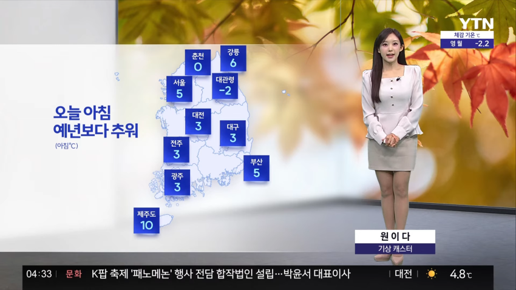
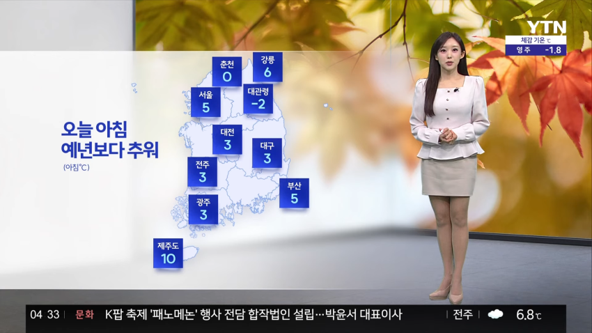
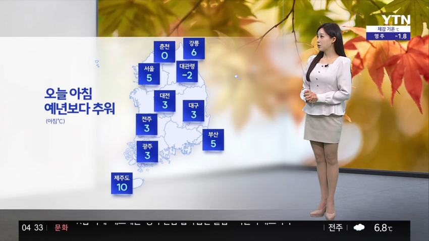
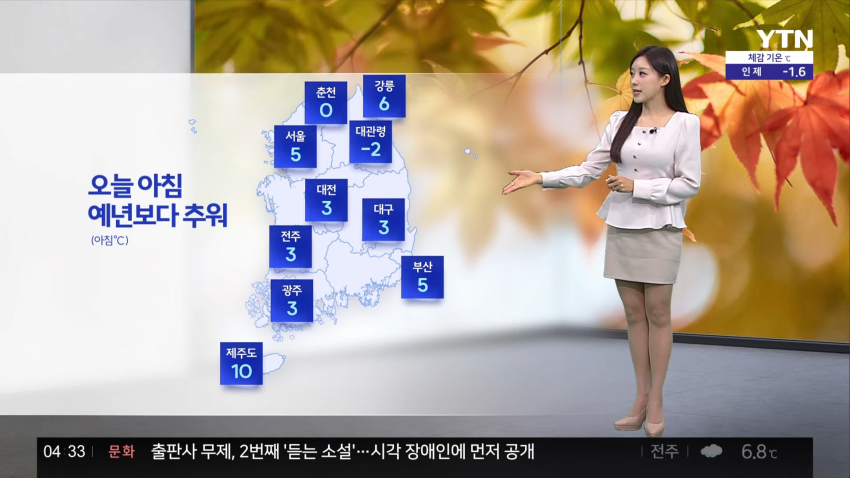
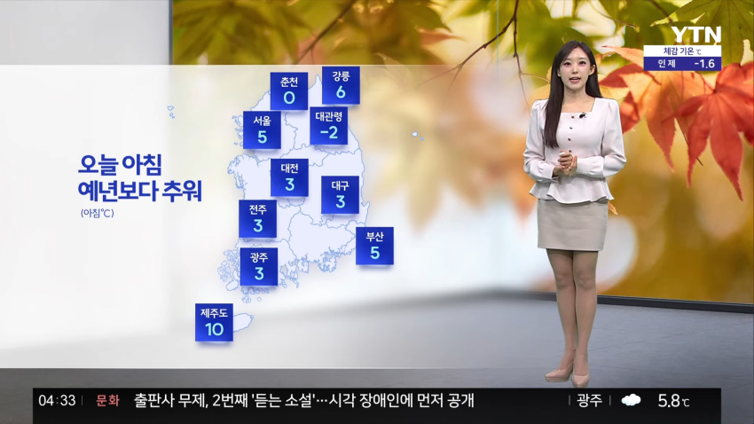
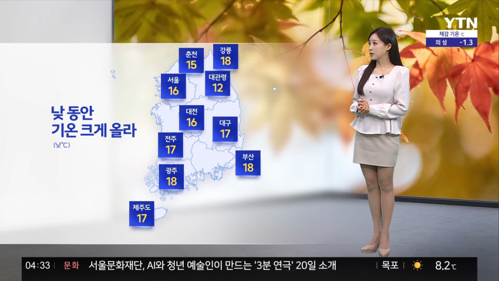
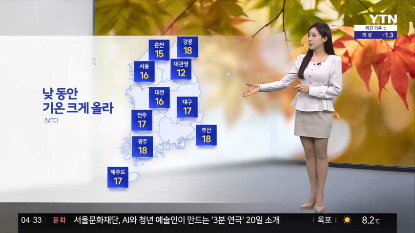
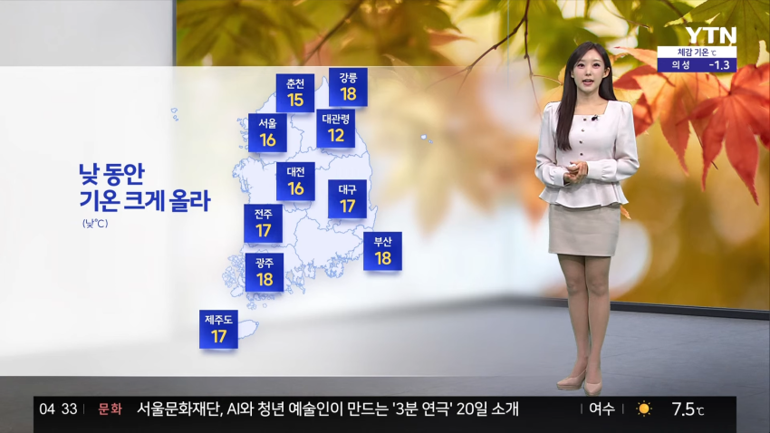
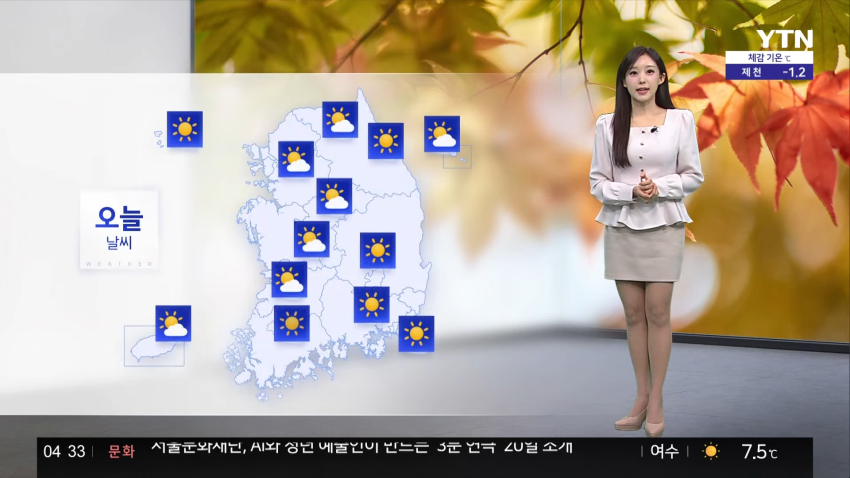
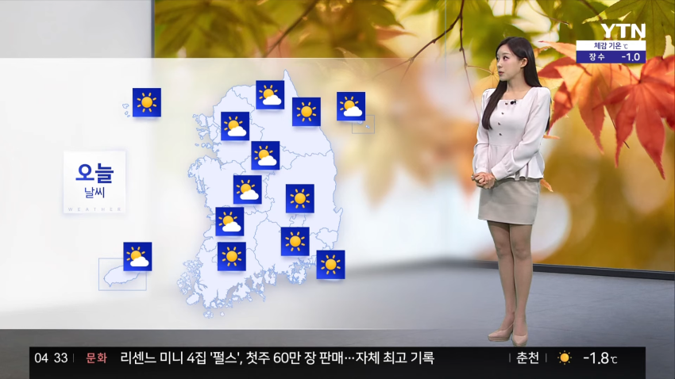
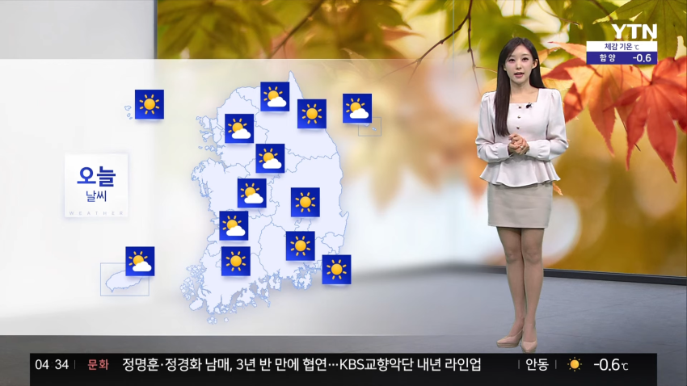
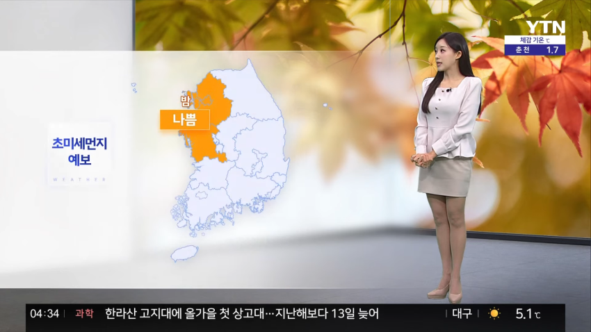
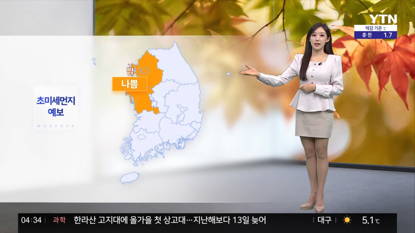
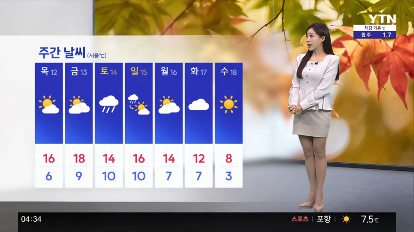
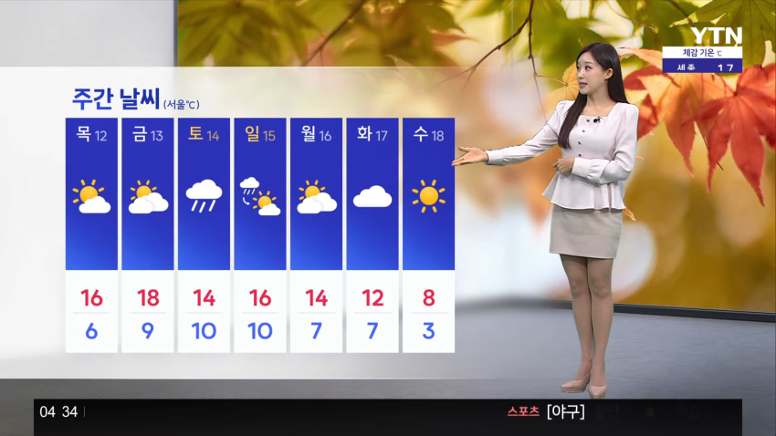
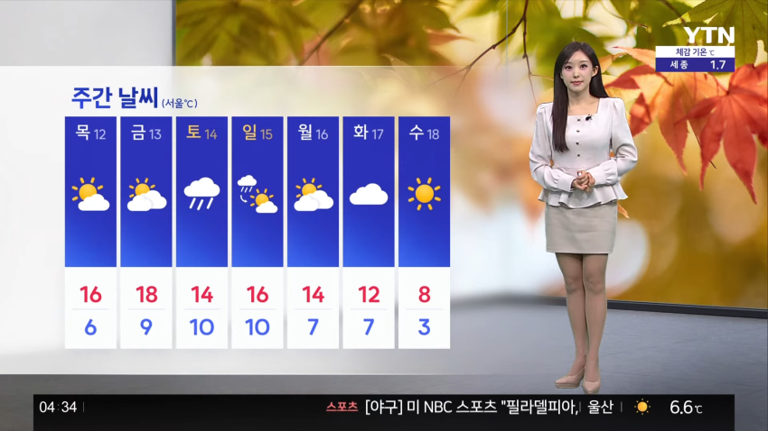
















댓글
수집 당시 댓글 47개
미시천하 · 11.11 08:08:29
기갤러1 · 11.11 08:17:33
기갤러2 · 11.11 08:21:48
기갤러2 · 11.11 08:21:57
기갤러3 · 11.11 08:23:27
기갤러4 · 11.11 09:04:21
땨뗘(봇) · 11.11 09:46:07
ㅇㅇ · 11.11 09:47:45
ㅇㅇ · 11.11 09:48:34
ㅇㅇ · 11.11 09:48:36
ㅇㅇ · 11.11 09:49:17
ㅇㅇ · 11.11 09:49:25
ㅇㅇ · 11.11 09:49:48
ㅇㅇ · 11.11 09:49:48
ㅇㅇ · 11.11 09:49:55
nigger892 · 11.11 09:51:09
· ㅇㅇ · 11.11 09:52:04
ㅇㅇ · 11.11 09:55:02
ㅇㅇ · 11.11 09:56:26
ㅇㅇ · 11.11 09:57:16
Eldian · 11.11 10:04:40
원또 · 11.11 10:07:44
ㅇㅇ · 11.11 10:14:26
ㅇㅇ · 11.11 10:16:07
ㅇㅇ · 11.11 10:22:00
ㅇㅇ · 11.11 10:30:03
ㅇㅇ · 11.11 11:01:07
ㅇㅇ · 11.11 11:22:31
ㅇㅇ · 11.11 11:24:16
해갤러 · 11.11 11:42:56
1
ㅇㅇ · 11.11 11:43:47
ㅇㅇ · 11.11 11:57:22
ㅇㅇ · 11.11 12:10:17
ㅇㅇ · 11.11 12:53:42
ㅇㅇ · 11.11 12:57:46
ㅇㅇㅇ · 11.11 13:13:00
ㅇㅇ · 11.11 13:20:27
ㅇㅇ · 11.11 13:28:55
ㅇㅇ · 11.11 13:47:03
ㅇㅇ · 11.11 13:52:34
ㅇㅇ · 11.11 13:58:19
ㅇㅇ · 11.11 14:31:38
ㅇㅇ · 11.11 15:17:21
ㅇㅇ · 11.11 15:19:43
ㅇㅇ · 11.11 15:31:00
익붕이 · 11.11 15:34:18
ㅇㅇ · 11.11 15:36:46